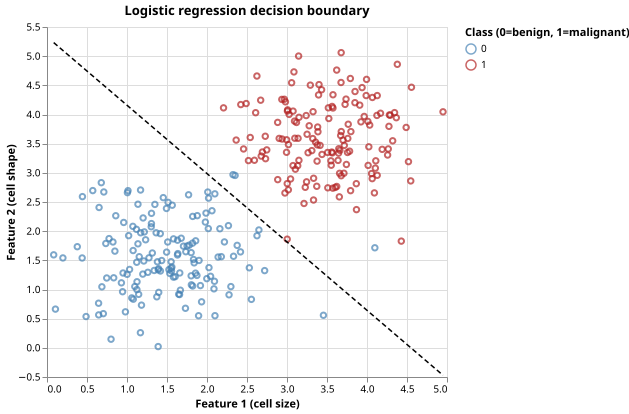

Tumor Classification by Logistic Regression
The Problem
- Computational pathology extracts quantitative features from tissue images — cell size, shape irregularity, nuclear-to-cytoplasm ratio — and uses them to predict whether a sample is benign or malignant.
- Logistic regression is the simplest model that outputs a probability rather than a raw score: the predicted class-1 probability lies in $(0, 1)$ so it can be interpreted directly as a risk estimate.
- It fits a linear boundary in feature space and is easy to train, interpret, and test; more complex models often offer little additional accuracy when the classes are linearly separable.
The Logistic Regression Model
- A linear combination of features $\mathbf{x}$ produces a score $z = \mathbf{w} \cdot \mathbf{x} + b$.
- The sigmoid function $\sigma(z) = 1/(1 + e^{-z})$ maps $z$ to a probability in $(0, 1)$:
$$p = \sigma(z) = \frac{1}{1 + e^{-z}}$$
- At $z = 0$ the model is completely uncertain: $\sigma(0) = 0.5$.
- The predicted class is 1 when $p \geq 0.5$, which is equivalent to $z \geq 0$.
def sigmoid(z):
"""Map any real number to (0, 1) via the logistic function 1 / (1 + exp(-z))."""
return 1.0 / (1.0 + np.exp(-z))
def predict_proba(X, w, b):
"""Return predicted class-1 probability for each row of X.
Each probability is sigmoid(X @ w + b), the logistic regression output.
"""
return sigmoid(X @ w + b)
def predict(X, w, b):
"""Return predicted class labels (0 or 1) by thresholding probabilities at 0.5."""
return (predict_proba(X, w, b) >= 0.5).astype(int)
A logistic regression model with $\mathbf{w} = [1, 0]$ and $b = 1$ receives input $\mathbf{x} = [0, 0]$. Compute $\sigma(0 \cdot 1 + 0 \cdot 0 + 1) = \sigma(1)$ to three decimal places.
Training: Minimising Binary Cross-Entropy
- The binary cross-entropy loss penalises confident wrong predictions:
$$L(\mathbf{w}, b) = -\frac{1}{n} \sum_{i=1}^{n} \left[ y_i \log p_i + (1 - y_i) \log(1 - p_i) \right]$$
- Gradient descent iteratively moves $\mathbf{w}$ and $b$ downhill:
$$\frac{\partial L}{\partial \mathbf{w}} = \frac{1}{n} X^T (\mathbf{p} - \mathbf{y}) \qquad \frac{\partial L}{\partial b} = \frac{1}{n} \sum_i (p_i - y_i)$$
- The update rule at each step is $\mathbf{w} \leftarrow \mathbf{w} - \eta \partial L / \partial \mathbf{w}$ where $\eta$ is the learning rate.
def train(X, y, lr=0.1, n_iter=2000):
"""Fit logistic regression by gradient descent on binary cross-entropy loss.
Binary cross-entropy: L = -(1/n) sum [ y_i log(p_i) + (1-y_i) log(1-p_i) ]
Gradients:
dL/dw = (1/n) X^T (p - y)
dL/db = (1/n) sum(p - y)
Returns (w, b): weight vector and scalar bias.
"""
n, p = X.shape
w = np.zeros(p)
b = 0.0
for _ in range(n_iter):
proba = predict_proba(X, w, b)
residual = proba - y
w -= lr * (X.T @ residual) / n
b -= lr * np.mean(residual)
return w, b
In the gradient update w -= lr * (X.T @ residual) / n, what does residual represent?
- The difference between predicted probability and the true label for each sample
- Correct:
residual = proba - yis the error vector $(p_i - y_i)$ for all $n$ samples; the gradient is its weighted sum. - The difference between the current loss and the minimum possible loss
- Wrong: the residual is per-sample, not a scalar measuring how far we are from the optimum.
- The weight vector from the previous iteration
- Wrong: the weight vector is
w;residualmeasures how wrong the current predictions are. - The learning rate scaled by the sample size
- Wrong: the learning rate is a separate scalar
lr;residualis a vector of prediction errors.
Generating Synthetic Data
- Two isotropic Gaussian clusters in 2D simulate benign (centred at $[1.5, 1.5]$) and malignant (centred at $[3.5, 3.5]$) cell populations.
- The Euclidean distance between class means is $\sqrt{8} \approx 2.83$ standard deviations, making the classes well-separated but not trivially so.
SEED = 7493418 # RNG seed for reproducibility
N_PER_CLASS = 150 # samples per class
# Class 0 (benign): Gaussian cluster centred at BENIGN_MEAN.
# Class 1 (malignant): Gaussian cluster centred at MALIGNANT_MEAN.
# Both classes share the same isotropic standard deviation FEATURE_STD.
BENIGN_MEAN = [1.5, 1.5]
MALIGNANT_MEAN = [3.5, 3.5]
FEATURE_STD = 0.6 # within-class spread for each feature
def make_tumor_data(
n_per_class=N_PER_CLASS,
benign_mean=None,
malignant_mean=None,
feature_std=FEATURE_STD,
seed=SEED,
):
"""Return a Polars DataFrame with columns 'feature_1', 'feature_2', and 'label'.
Class 0 (benign) is centred at benign_mean; class 1 (malignant) at malignant_mean.
Both use isotropic Gaussian noise with standard deviation feature_std.
Rows are shuffled so that class labels do not appear in a block.
"""
if benign_mean is None:
benign_mean = BENIGN_MEAN
if malignant_mean is None:
malignant_mean = MALIGNANT_MEAN
rng = np.random.default_rng(seed)
benign = rng.normal(benign_mean, feature_std, (n_per_class, 2))
malignant = rng.normal(malignant_mean, feature_std, (n_per_class, 2))
features = np.vstack([benign, malignant])
labels = np.array([0] * n_per_class + [1] * n_per_class)
idx = rng.permutation(len(labels))
features = features[idx]
labels = labels[idx]
return pl.DataFrame(
{"feature_1": features[:, 0], "feature_2": features[:, 1], "label": labels}
)
Evaluating the Classifier
- A confusion matrix tabulates the four combinations of actual and predicted class: true negatives (TN), false positives (FP), false negatives (FN), and true positives (TP).
- False negatives (malignant predicted as benign) are typically more harmful than false positives in cancer screening, which motivates choosing a threshold below 0.5 in practice.
def confusion_matrix(y_true, y_pred):
"""Return a 2x2 confusion matrix [[TN, FP], [FN, TP]].
Rows index actual class (0 = benign, 1 = malignant).
Columns index predicted class (0 = benign, 1 = malignant).
"""
tn = int(np.sum((y_pred == 0) & (y_true == 0)))
fp = int(np.sum((y_pred == 1) & (y_true == 0)))
fn = int(np.sum((y_pred == 0) & (y_true == 1)))
tp = int(np.sum((y_pred == 1) & (y_true == 1)))
return np.array([[tn, fp], [fn, tp]])
def accuracy(y_true, y_pred):
"""Return the fraction of correctly classified samples."""
return float(np.mean(y_true == y_pred))
Label each cell of the 2X2 confusion matrix [[TN, FP], [FN, TP]].
| Cell | Meaning |
|---|---|
| TN (top-left) | Sample is benign and model predicted benign — a correct negative |
| FP (top-right) | Sample is benign but model predicted malignant — a false alarm |
| FN (bottom-left) | Sample is malignant but model predicted benign — a missed cancer |
| TP (bottom-right) | Sample is malignant and model predicted malignant — a correct positive |
Visualizing the Decision Boundary
def plot_boundary(X, y, w, b, filename):
"""Save a scatter plot of the two classes with the logistic regression decision boundary.
The boundary is the line w[0]*x1 + w[1]*x2 + b = 0, i.e.
x2 = -(w[0]*x1 + b) / w[1]
plotted over the range of feature 1 values in the data.
"""
scatter_df = pl.DataFrame(
{"feature_1": X[:, 0], "feature_2": X[:, 1], "label": y.astype(str)}
)
scatter = (
alt.Chart(scatter_df)
.mark_point(opacity=0.7, size=30)
.encode(
x=alt.X("feature_1:Q", title="Feature 1 (cell size)"),
y=alt.Y("feature_2:Q", title="Feature 2 (cell shape)"),
color=alt.Color(
"label:N",
scale=alt.Scale(domain=["0", "1"], range=["steelblue", "firebrick"]),
legend=alt.Legend(title="Class (0=benign, 1=malignant)"),
),
)
)
x1_range = np.linspace(X[:, 0].min(), X[:, 0].max(), 200)
x2_boundary = -(w[0] * x1_range + b) / w[1]
boundary_df = pl.DataFrame({"feature_1": x1_range, "feature_2": x2_boundary})
boundary_line = (
alt.Chart(boundary_df)
.mark_line(color="black", strokeWidth=1.5, strokeDash=[5, 3])
.encode(x="feature_1:Q", y="feature_2:Q")
)
chart = alt.layer(scatter, boundary_line).properties(
width=400, height=350, title="Logistic regression decision boundary"
)
chart.save(filename)

Testing
Sigmoid exact values
- $\sigma(0) = 0.5$ is an exact algebraic identity; no tolerance is needed.
- $\sigma(\pm 100)$ saturates to $1$ or $0$ to within $10^{-10}$; this catches any sign error in the exponent argument.
Zero weights produce constant probability
- With $\mathbf{w} = \mathbf{0}$ and $b = 0$ the model outputs $0.5$ for every input; this
verifies that
predict_probacorrectly passes the linear combination throughsigmoid.
Confusion matrix — perfect and all-wrong classifiers
- A perfect classifier has $\text{TP} = \text{TN} = 2$ and $\text{FP} = \text{FN} = 0$; the all-wrong classifier swaps TN/TP with FP/FN.
- Using a 4-sample input makes every cell of the $2\times2$ matrix exactly one or two, allowing integer comparison without any tolerance.
Accuracy
- A perfect match gives accuracy 1.0; an all-wrong match gives 0.0. Both are exact.
Training converges on separable data
- Class means 3.3 standard deviations apart in each feature; 2000 iterations at learning rate 0.1. Accuracy above 95% is a conservative bound — the measured value is 97.7% on the full dataset. The safety factor of $\approx 1.03$ above the threshold accommodates random seeds that produce slightly less-separated draws.
import numpy as np
import pytest
from generate_tumor import make_tumor_data
from tumor import sigmoid, predict_proba, predict, train, confusion_matrix, accuracy
def test_sigmoid_midpoint():
# sigmoid(0) = 0.5 by definition.
assert sigmoid(0.0) == pytest.approx(0.5)
def test_sigmoid_large_positive():
# sigmoid saturates to 1 for large positive inputs.
assert sigmoid(100.0) == pytest.approx(1.0, abs=1e-10)
def test_sigmoid_large_negative():
# sigmoid saturates to 0 for large negative inputs.
assert sigmoid(-100.0) == pytest.approx(0.0, abs=1e-10)
def test_predict_proba_zero_weights():
# With w=0 and b=0 every prediction is 0.5 regardless of X.
X = np.array([[1.0, 2.0], [3.0, 4.0]])
w = np.array([0.0, 0.0])
proba = predict_proba(X, w, 0.0)
assert np.allclose(proba, 0.5)
def test_confusion_matrix_perfect_classifier():
# A perfect classifier has TP=FP=FN=TN matching the class counts.
y_true = np.array([0, 0, 1, 1])
y_pred = np.array([0, 0, 1, 1])
cm = confusion_matrix(y_true, y_pred)
# [[TN, FP], [FN, TP]]
assert cm[0, 0] == 2 # TN
assert cm[1, 1] == 2 # TP
assert cm[0, 1] == 0 # FP
assert cm[1, 0] == 0 # FN
def test_confusion_matrix_all_wrong():
# When every prediction is wrong, TP=TN=0.
y_true = np.array([0, 0, 1, 1])
y_pred = np.array([1, 1, 0, 0])
cm = confusion_matrix(y_true, y_pred)
assert cm[0, 0] == 0 # TN
assert cm[1, 1] == 0 # TP
assert cm[0, 1] == 2 # FP
assert cm[1, 0] == 2 # FN
def test_accuracy_perfect():
y_true = np.array([0, 1, 0, 1])
assert accuracy(y_true, y_true) == pytest.approx(1.0)
def test_accuracy_half():
y_true = np.array([0, 0, 1, 1])
y_pred = np.array([1, 1, 0, 0])
assert accuracy(y_true, y_pred) == pytest.approx(0.0)
def test_train_well_separated_clusters():
# With class means 2 standard deviations apart in each feature,
# gradient descent should reach > 95% accuracy on the full dataset.
df = make_tumor_data()
X = df.select(["feature_1", "feature_2"]).to_numpy()
y = df["label"].to_numpy()
w, b = train(X, y, lr=0.1, n_iter=2000)
y_pred = predict(X, w, b)
# The two Gaussian clusters are separated by (3.5-1.5)/0.6 ≈ 3.3 std in each
# feature; 95% is a conservative lower bound for well-separated classes.
assert accuracy(y, y_pred) > 0.95
Logistic regression key terms
- Sigmoid function $\sigma(z)$
- $1/(1+e^{-z})$; maps any real score to $(0,1)$ and equals 0.5 at $z=0$, where the model is uncertain
- Binary cross-entropy
- Loss function $-[y\log p + (1-y)\log(1-p)]$; heavily penalises confident wrong predictions (e.g. $p \approx 0$ when $y = 1$)
- Gradient descent
- Iteratively subtracts a learning-rate-scaled gradient from the weights; converges to a local minimum for convex losses like cross-entropy
- Decision boundary
- The hyperplane $\mathbf{w}\cdot\mathbf{x} + b = 0$ where predicted probability is exactly 0.5; samples on either side receive different class labels
- Confusion matrix
- A $2\times2$ table of TN, FP, FN, TP counts; shows not just overall accuracy but the types of errors the model makes
Exercises
Feature normalisation
Logistic regression is sensitive to feature scale: a feature with large absolute values dominates the dot product before training has adjusted the corresponding weight. Normalise each feature to zero mean and unit variance before training: $x' = (x - \bar{x}) / \hat{\sigma}$. Show that normalisation speeds up convergence (reaches the same accuracy in fewer iterations) when the two features have very different scales (e.g. feature 1 in $[0, 100]$ and feature 2 in $[0, 1]$).
Precision, recall, and F1
Overall accuracy can be misleading when classes are imbalanced. Implement functions for precision $= \text{TP}/(\text{TP}+\text{FP})$, recall $= \text{TP}/(\text{TP}+\text{FN})$, and $F_1 = 2 \cdot \text{precision} \cdot \text{recall} / (\text{precision} + \text{recall})$. Generate a dataset where class 1 is 10% of the data and show that high accuracy is achievable by predicting class 0 always — while precision, recall, and $F_1$ expose the failure.
Decision threshold adjustment
The default threshold of 0.5 minimises misclassification rate on balanced classes. For cancer screening, false negatives (missed malignancies) should be penalised more than false positives. Plot precision and recall as functions of the decision threshold from 0.1 to 0.9. Find the threshold that achieves recall $\geq 0.98$ with the highest possible precision.
Multinomial extension
Extend the binary classifier to three classes (benign, low-grade malignant, high-grade malignant). Generate three Gaussian clusters and implement softmax regression using the one-vs-rest strategy: train one binary classifier per class and predict the class with the highest predicted probability. Report the three-class confusion matrix.